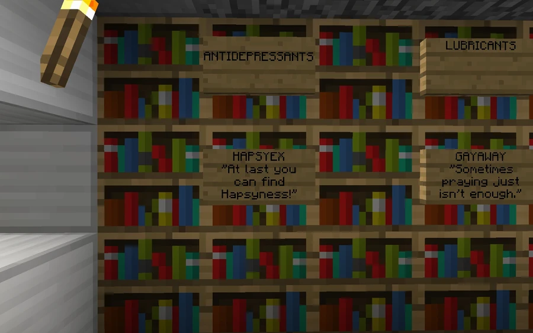
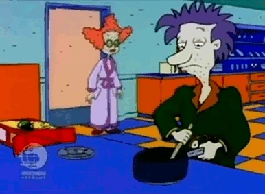

HapsyEx
An antidepressant distributed by Feels Good Man Pharmaceuticals and mentioned among the medications prescribed at Broville General Hospital.
Product and distribution
Hapsyex™ is the antidepressant distributed by Feels Good Man Pharmaceuticals, available at FeelsGoodMan Pharmacy outlets. The account also presents it as a prescription medication administered by Broville General Hospital.



Advertising and commercial importance
The slogan plays on the product’s name: “At last you can find hapsyness!” The community material calls it Broville’s most popular antidepressant and attributes around 0.78% of Feels Good Man’s annual profit to it. A promotional image adds the testimonial “Hapsyex made me regain control of my life”. These are elements of the medication’s fictional presentation.



Attributed origin
Its creation is placed in 1896 and attributed to a mysterious reincarnation of Hapsycolour. This extraordinary origin appears as part of the community narrative, without further development of the creator or manufacturing process.
See also
Sources and references
- v11.4.4 maps, signs, books and items World records
- HapsyEx · Broville Wiki Community archive
Text adapted and expanded from HapsyEx (contributors and history, revision 5037). Adapted text is available under CC BY-SA 3.0.